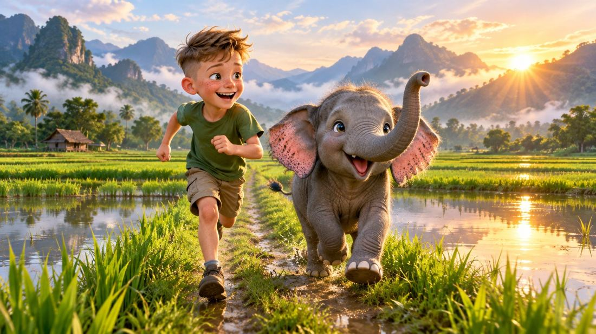

Kinderserie · In productie
Een jongen uit Nederland. Een olifant in het klooster.
Animatieserie voor kinderen: een Nederlandse jongen en een babyolifant in het noorden van Thailand.
Over Manu en Khanun
Manu verhuist met zijn vader en broertje Leon naar een klein dorp tussen de rijstvelden in het noorden van Thailand. Alles is daar anders, tot hij in het bamboebos Khanun ontmoet, een babyolifant uit het klooster. Een serie over vriendschap en een nieuwe cultuur ontdekken, gemaakt met AI-animatie.
- Animatieserie voor kinderen, in het Nederlands
- Over vriendschap, Thailand en een nieuwe cultuur
- Gemaakt met AI-beeld, -stem en -muziek
